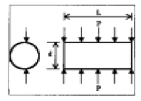
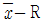
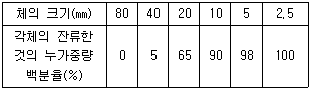
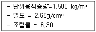
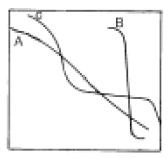
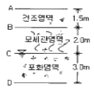
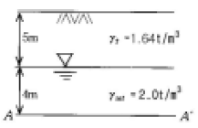

건설재료시험기사 (2005-03-20 기출문제)
1과목: 콘크리트공학
1. 경량 콘크리트에 대한 다음 설명 중 틀린 것은?
- 경량 골재는 젖은 상태로 사용하는 것이 좋다.
- 경량 콘크리트의 탄성계수는 일반 콘크리트보다 작다.
- 경량 콘크리트는 같은 배합일 때 일반 콘크리트보다 슬럼프가 크다.
- 경량 콘크리트는 가볍지만 장거리 운반에 불리하다.
(정답률: 알수없음)

2. 콘크리트 다지기에 대한 설명 중 옳지 않은 것은?
- 콘크리트 다지기에는 내부진동기 사용을 원칙으로 한다.
- 진동기는 콘크리트로부터 천천히 빼내어 구멍이 남지 않도록 해야 한다.
- 내부진동기는 될 수 있는 대로 연직으로 일정한 간격으로 찔러 넣는다.
- 콘크리트가 한 쪽에 치우쳐 있을 때는 내부진동기로 평평하게 이동시켜야 한다.
(정답률: 알수없음)
3. 콘크리트에 발생되는 크리프에 대한 설명 중 틀린 것은?
- 시멘트량이 많을수록 크리프는 증가한다.
- 온도가 낮을수록 크리프는 증가한다.
- 조강 시멘트는 보통 시멘트보다 크리프가 작다.
- 부재의 치수가 작을수록 크리프는 증가한다.
(정답률: 알수없음)
4. 매스 콘크리트의 균열을 방지하기 위한 대책으로 잘못된것은?
- 수화열이 적은 시멘트를 사용한다.
- 단위 시멘트량을 적게 한다.
- 슬럼프를 크게 한다.
- 골재치수를 크게 한다.
(정답률: 50%)
5. 콘크리트 표면의 물의 증발속도가 블리딩속도 보다 빠른 경우와 같이 급속한 수분증발이 일어나는 경우에 콘크리트 표면에 발생하는 균열은?
- 소성수축균열
- 침하균열
- 온도균열
- 건조수축균열
(정답률: 알수없음)
6. 콘크리트 구조물의 내구성을 향상시키기 위해 유의하여야 할 사항 중 옳지 않은 것은?
- 배합시 단위수량을 될 수 있는 한 적게 사용한다.
- 충분한 피복두께를 확보한다.
- 가능한 한 비중이 작은 골재를 사용한다.
- 콜드죠인트를 만들지 않는다.
(정답률: 90%)
7. 골재의 단위용적이 0.7m3인 콘크리트에서 잔골재율이 40%이고, 잔골재의 비중이 2.58이면 단위 잔골재량은 얼마인가?
- 710.6 kg/m3
- 722.4 kg/m3
- 745.2 kg/m3
- 750.0 kg/m3
(정답률: 알수없음)
8. 현장에서 콘크리트의 재료를 계량할 때 1회 계량분에 대해 허용오차 기준으로 틀린 것은?
- 물은 1% 이하로 한다.
- 시멘트는 1% 이하로 한다.
- 혼화제는 3% 이하로 한다.
- 골재는 2% 이하로 한다.
(정답률: 알수없음)
9. 콘크리트의 양생에 대한 설명 중 틀린 것은?
- 양생효과는 장기강도에 영향을 끼치므로 28일이후의 양생에 특히 주의한다.
- 수밀성 콘크리트의 습윤양생기간은 가능한한 길게 할 필요가 있다.
- 콘크리트를 타설후 급격히 온도가 상승할 경우 콘크리트가 건조하지 않도록 주의한다.
- 콘크리트를 타설한 후 경화를 시작하기까지 직사광선을 피한다.
(정답률: 70%)
10. 시방 배합에 의한 단위 잔골재량은 7⑤kg/m3, 단위 굵은 골재량은 1,101kg/m3이다. 현장의 입도에 대한 골재 상태가 5mm체에 남는 잔 골재량은 4%이고 5mm체를 통과하는 굵은 골재량은 3%이다. 입도에 의한 현장 배합의 잔골재량(X kg)과 굵은 골재량(Y kg)은?
- X=680, Y=1,126
- X=700, Y=1,106
- X=720, Y=1,086
- X=740, Y=1,066
(정답률: 알수없음)
11. 다음 중 콘크리트의 시방배합에 대한 설명으로 잘못된것은?
- 시방배합은 시방서 또는 책임기술자가 지시하는 배합을 말한다.
- 일반적으로 단위량으로 표시한다.
- 사용되는 골재는 공기중 건조상태를 기준으로 한다.
- 시방배합에서 잔골재는 5mm체를 전부 통과하는 것을 말한다.
(정답률: 알수없음)
12. 외기온도가 25℃를 넘을 때 비비기로부터 치기가 끝날 때까지 최대 얼마의 시간을 넘어서는 안되는가?
- 0.5시간
- 1시간
- 1.5시간
- 2시간
(정답률: 알수없음)
13. 프리팩트 콘크리트에 대한 설명 중 잘못된 것은?
- 프리팩트콘크리트의 강도는 원칙적으로 재령 28일 또는 재령 91일의 압축강도를 기준으로 한다.
- 굵은 골재의 최소치수는 20mm 이상이어야 한다.
- 일반적으로 굵은 골재의 최대치수는 최소치수의 2∼4배 정도가 좋다.
- 일반적으로 팽창률의 설정값은 시험 시작 후 3시간에서의 값이 5~10%인 것을 표준으로 한다.
(정답률: 알수없음)
14. 다음 중 철근콘크리트(RC)와 비교할 때 프리스트레스트 콘크리트(PSC)의 장점으로 틀린 것은?
- 변형이 적고 진동에 강하다.
- 탄력성과 복원성이 우수하다.
- 강재 부식의 위험성이 작다.
- 설계하중하에서 RC보다 지간을 길게할 수 있어 경제적이다.
(정답률: 알수없음)
15. 콘크리트의 워커빌리티(Workability)에 영향을 미치는 요인에 대한 설명으로 틀린 것은?
- 고로시멘트나 실리카시멘트를 사용하면 동일한 시멘트량과 동일 물-시멘트비라 해도 워커빌리티가 좋아진다.
- 일반적으로 단위시멘트 사용량이 많은 부배합의 경우는 빈배합의 경우보다 워커빌리티는 좋아진다.
- 골재의 입도분포가 양호하고 입형이 둥글면 워커빌리티는 좋아진다.
- 같은 배합의 경우라도 온도가 높으면 워커빌리티는 좋아진다.
(정답률: 알수없음)
16. 굳지 않은 콘크리트 중의 전 염화물이온량은 원칙적으로 최대 몇 kg/m3이하로 하여야 하는가?
- 0.20㎏/m3
- 0.30㎏/m3
- 0.50㎏/m3
- 0.60㎏/m3
(정답률: 82%)
17. 콘크리트의 워커빌리티 측정 방법이 아닌 것은?
- 슬럼프 시험
- Vee-Bee 시험
- 흐름 시험
- 지깅 시험
(정답률: 알수없음)
18. 수중콘크리트에 대한 설명 중 옳지 않은 것은?
- 수중콘크리트는 정수(靜水)중에서 타설하는 것을 원칙으로 한다.
- 수중콘크리트는 트레미나 콘크리트 펌프를 사용해서 쳐야 한다.
- 일반 수중콘크리트의 물-시멘트비는 60%이하를 표준으로 한다.
- 수중콘크리트는 경화시까지 물의 유동을 방지해야 한다.
(정답률: 73%)
19. 그림과 같은 지름이 100mm 이고 길이가 200mm인 원주형공시체에 대한 할렬인장시험결과 최대하중이 120kN이라고 할경우 이 공시체의 할렬인장강도는?

- 3.82MPa
- 6.03MPa
- 7.66MPa
- 15.32MPa
(정답률: 알수없음)
20. 프리스트레스트 콘크리트에 대한 설명으로 틀린 것은?
- 굵은 골재의 최대치수는 보통의 경우 40mm를 표준으로한다. 그러나 부재치수, 철근간격, 펌프압송 등의 사정에 따라 25mm를 사용할 수도 있다.
- PSC그라우트에 사용하는 혼화제는 블리딩 발생이 없는 것의 사용을 표준으로 한다.
- 프리스트레싱할 때의 콘크리트 압축강도는 프리텐션방식으로 시공할 경우 30MPa이상이어야 한다.
- 서중 시공의 경우에는 지연제를 겸한 감수제를 사용하여 그라우트 온도의 상승이나 그라우트가 급결되지 않도록 하여야 한다.
(정답률: 알수없음)
2과목: 건설시공 및 관리
21. 성토시공 공법중 두께가 90∼120㎝로 하천제방, 도로, 철도의 축제에 시공되며, 층마다 일정 기간 동안 방치하여 자연침하를 기다려 다음층을 위에 쌓아 올리는 방법은?
- 물다짐 공법
- 비계쌓기법
- 전방쌓기법
- 수평층쌓기법
(정답률: 알수없음)
22. 전면에 달린 배토판을 좌하, 우하로 기울어지게 하여 작업하는 것으로 경사면 굴착이나 도랑파기 작업을 할 수 있는 도저는?
- 틸트 도저
- 스트레이트 도저
- 앵글 도저
- 레이크 도저
(정답률: 알수없음)
23. 아스팔트 포장의 시공에 앞서 실시하는 시험포장의 결과로 얻어지는 사항과 관계가 없는 것은?
- 혼합물의 현장배합 입도 및 아스팔트 함량의 결정
- 플랜트에서의 작업표준 및 관리목표의 설정
- 시공관리 목표의 설정
- 포장두께의 결정
(정답률: 알수없음)
24. 다음은 성토에 사용되는 흙의 조건에 관한 설명이다. 옳지 않은 것은?
- 다루기가 쉬워야 한다.
- 충분한 전단강도를 가져야 한다.
- 도로성토에서는 투수성이 양호해야 한다.
- 가급적 점토성분을 많이 포함하고 자갈 및 왕모래 등은 적어야 한다.
(정답률: 알수없음)
25. 보통 여러 개의 벽과 밑이 폐단면인 것으로 방파제나 안벽용으로 쓰일 때는 해상으로 진수시켜 소정의 위치에서 내부에 모래, 물, 자갈, 콘크리트 등으로 채워서 수중에 가라 앉히는 케이슨 기초는?
- 박스 케이슨
- 오픈 케이슨
- 뉴매틱 케이슨
- 기초 케이슨
(정답률: 알수없음)
26. 교각의 수 및 경간 결정의 유의사항으로 틀린 것은?
- 교량건설의 공비를 비교해서 경제적인 방법을 취한다.
- 교각으로 인한 유수의 폭의 감소가 발생되지 않도록 한다.
- 하천의 만곡부에 가설 할 때는 교각의 수를 많게 한다.
- 유수 및 선박의 운항에 장애가 되지 않도록 한다.
(정답률: 알수없음)
27. 1개의 간선 집수거 또는 집수지거에 많은 흡수거를 합류시켜 만든 방식으로 지형이 완만한 경사로 되어 있고 습윤상태가 같은 곳에 적합한 암거배열 방식은?
- 자연식
- 어골식
- 빗식
- 2중간선식
(정답률: 알수없음)
28. 필형 댐(fill type dam)의 설명으로 옳은 것은?
- 필형 댐은 여수토가 반드시 필요하지는 않다.
- 암반강도 면에서는 기초암반에 걸리는 단위 체적당의 힘은 콘크리트 댐보다 크므로 콘크리트 댐보다 제약이 많다.
- 필형 댐은 홍수시 월류에도 대단히 안정하다.
- 필형 댐에서는 여수토를 댐 본체(本體)에 설치할 수 없다.
(정답률: 알수없음)
29. 시멘트 콘크리트 포장시공에 있어서 초기균열을 방지하는 대책에 대하여 틀린 것은?
- 고온의(70℃ 이상) 시멘트를 사용하지 않는다.
- 노반마찰을 적게한다.
- 건조에 견딜수 있게 단위 수량을 다소 많게 콘크리트를 타설한다.
- 가로이음한 슬립바는 도로중심선에 평행하게 똑바로 매설한다.
(정답률: 73%)
30. 공기 케이슨 공법에 대한 다음 설명 중 틀린 것은?
- 비교적 소규모의 공사나 심도가 얕은 기초공에는 경제적이다.
- 고압내에서 작업을 하여 대기압 중에 나올 때 감압 때문에 체액 또는 조직내에 용해되어 있던 질소가스가 기포로 되어 체내에 잔류하기 때문에 케이슨병이 발생할 수 있다.
- 일반적인 굴착 깊이는 35~40m로 제한되어 있다.
- 지하수를 저하시키지 않으며 히빙, 보일링을 방지할 수 있으므로 인접 구조물의 침하 우려가 없다.
(정답률: 30%)
31. 준설능력이 크고 대규모 공사에 적합하여 비교적 넓은 면적의 토질준설에 알맞고 선(船)형에 따라 경질토 준설도 가능한 준설선은?
- 그래브준설선
- 디퍼준설선
- 버켓준설선
- 펌프준설선
(정답률: 50%)
32. 불도저(bulldozer) 작업의 경우 다음의 조건에서 본바닥 토량으로 환산한 1시간당 토공 작업량(m3/h)은? (단, 1회 굴착 압토량은 느슨한 상태로 3.0m3, 작업효율 = 0.6, 토량변화율 L = 1.2, 평균 압토 거리 = 30m, 전진속도 =30m/분, 후진속도 = 60m/분, 기어변속시간 = 0.5분)
- 45
- 34
- 20
- 15
(정답률: 알수없음)
33. 다져진 토량 37,800m3를 성토하는데 흐트러진 토량 30,000m3가 있다. 이 때, 부족토량은 자연 상태 토량(m3)으로 얼마인가? (단, 토량변화율 L = 1.25, C = 0.9)
- 22,000m3
- 18,000m3
- 15,000m3
- 11,000m3
(정답률: 70%)
34. PERT 공정관리기법에서는 3점 시간 견적법을 사용한다. 다음의 설명중 옳지 않은 것은?
- 경험이 전혀없는 공사의 공기산출에 사용한다.
- 낙관적 시간 ＞ 정상 시간 ＞ 비관적 시간의 관계가 성립된다.
- 기대시간(te)는
 로 산출한다.（단, a : 낙관적 시간, m : 정상 시간, b : 비관적 시간）
로 산출한다.（단, a : 낙관적 시간, m : 정상 시간, b : 비관적 시간） - Event중심의 일정계산 이다.
(정답률: 55%)
35. 다음 기계 중에서 쇼벨(shovel)계 굴착기가 아닌 것은?
- 백호우(Back hoe)
- 모우터 스크레퍼(Motor scraper)
- 드래그라인(Dragline)
- 클렘셸(Clamshell)
(정답률: 80%)
36. 연약층이 두껍고 성토중에 기초지반의 강도증가를 기대할 수 없는 지반상에 단기간으로 성토하려 할 때의 공법으로 가장 적당한 것은?
- 서서히 성토하여 간극수압을 저하시켜 전단저항을 증대시킨다.
- 말뚝박기 등의 비탈막기공을 시공하여 성토부를 보호한다.
- Sand mat 공이든지 섶깔기공 등에 의하여 위의 하중을 넓게 분포시킨다.
- 좋은 흙으로 성토를 계속하여 연약토를 측방에 충분히 밀어 내어 지반을 개량한다.
(정답률: 알수없음)
37. 하천이나 해수가 시공중 터널내에 침투하는 것을 막는데 유리한 터널공법은 다음 중 어느 것인가?
- 쉴드공법
- 록앵커공법
- TBM 공법
- NATM 공법
(정답률: 알수없음)
38. 폭우시 옹벽 배면에 배수시설이 취약하면 옹벽저면을 통하여 침투수의 수위가 올라 간다. 이 침투수가 옹벽에 미치는 영향을 설명한 것 중 옳지 않은 것은?
- 활동면에서의 간극수압 증가
- 부분포화에 따른 뒷채움 흙무게의 증가
- 옹벽 바닥면에서의 양압력 증가
- 수평저항력의 증가
(정답률: 알수없음)
39. Vibro flotation 공법에 대한 설명 중 틀린 것은?
- 지반을 균일하게 다질 수 있으며 따라서 다짐 후에는 지반 전체가 상부구조를 지지할 수 있다.
- 깊은 곳의 다짐이 불가능하다.
- 지하수위의 고저에 영향을 받지 않고 시공할 수 있다.
- 공기가 빠르고 공사비가 싸다.
(정답률: 알수없음)
40.

품질관리도에서 1조의 측정치가 9, 7, 12, 13의 값을 가지며 2조의 측정치가 8, 9, 10, 12의 값을 가질 때 중심(CL)의 값은?- 9.75
- 10.00
- 10.25
- 10.50
(정답률: 알수없음)
3과목: 건설재료 및 시험
41. 굵은 골재의 체가름시험 결과이다. 이 골재의 조립률(粗粒率)은 얼마인가?

- 6.35
- 6.58
- 7.35
- 7.58
(정답률: 알수없음)
42. 천연 아스팔트에 속하지 않는 것은?
- 로크 아스팔트
- 레이크 아스팔트
- 샌드 아스팔트
- 스트레이트 아스팔트
(정답률: 알수없음)
43. 강의 열처리과정 중 가열 후 노 속에서 천천히 냉각시키는 것으로 강 속의 내부응력이 제거되고 신율이 증가하는 처리는?
- 불림
- 풀림
- 뜨임
- 담금질
(정답률: 알수없음)
44. 암석의 물리적 성질에 대한 설명으로 틀린 것은?
- 석재의 비중은 조암광물의 성질, 비율, 공극의 정도 등에 따라 달라진다.
- 암석의 흡수율은 공극을 채우고 있는 물의 중량의 시료 중량에 대한 백분율로 나타낸다.
- 일반적으로 석재의 비중이라면 절대건조비중을 말한다.
- 암석의 공극률이란 암석에 포함된 전 공극과 겉보기체적의 비를 말한다.
(정답률: 알수없음)
45. 시멘트 분산제에 대한 다음 설명 중 틀린 것은?
- 분산제를 사용하면 콘크리트의 강도, 수밀성, 내구성을 증대 시킬 수 있다.
- 분산제에는 Pozzolith와 Darex 등이 있다.
- 분산제를 사용한 콘크리트는 유동성이 많아지고 블리딩이나 골재 분리가 적게 일어난다.
- 시멘트 분산제는 시멘트 입자간의 표면 활성의 성질을 부여하여 비교적 균일하게 분산시킬 목적으로 사용된다
(정답률: 알수없음)
46. 다음 콘크리트용 골재에 대한 설명 중 틀린 것은?
- 굵은골재 최대치수를 크게 하면 같은 슬럼프의 콘크리트를 제조하는데 필요한 단위수량을 감소시킬 수 있다.
- 골재의 비중이 클수록 흡수량이 작아 내구적이다.
- 콘크리트의 압축강도는 물-시멘트비가 동일한 경우 굵은골재 최대치수가 커짐에 따라 증가한다.
- 조립률이 같은 골재라도 서로 다른 입도곡선을 가질 수있다.
(정답률: 알수없음)
47. 다음 중 열가소성 수지가 아닌 것은?
- 염화비닐 수지
- 폴리에틸렌 수지
- 알키드 수지
- 아크릴 수지
(정답률: 알수없음)
48. 커트백 아스팔트의 특성에 대한 설명 중 틀린 것은?
- 커트백 아스팔트는 비교적 연한 스트레이트 아스팔트에 적당한 휘발성 용제를 가하여 유동성을 좋게 한 것이다
- 커트백 아스팔트는 사용하는 용제의 양과 질에 따라 제품의 성질이 크게 좌우된다
- 커트백 아스팔트의 양생시간은 휘발성이 큰 용제일수록 그리고 용제량이 적을수록 길게한다
- 커트백 아스팔트는 점도를 일시적으로 저하시킨 것으로 상온시공이 가능하다
(정답률: 알수없음)
49. 다음 중 목재의 장점에 대한 설명으로 옳은 것은?
- 부식성이 크다.
- 내화성이 크다.
- 목질이나 강도가 균일하다.
- 충격이나 진동 등을 잘 흡수한다.
(정답률: 70%)
50. 폭파력이 가장 강하고 수중에서도 폭발할 수 있는 폭약은 다음 중 어느 것인가?
- 스트레이트 다이너마이트
- 교질 다이너마이트
- 분상 다이너마이트
- 규조토 다이너마이트
(정답률: 알수없음)
51. 건설공사 품질시험기준 중 입도조정기층의 체가름시험은 몇 m3마다 1회이상 실시하여야 하는가?
- 1,000m3
- 2,000m3
- 3,000m3
- 4,000m3
(정답률: 알수없음)
52. 실리카흄이 콘크리트의 성질에 미치는 영향으로 옳지 않은 것은?
- 실리카흄의 혼합량을 증가시키면서 목표슬럼프를 유지하기 위하여 필요한 단위수량을 감소시킬 수 있다.
- 실리카흄은 매우 미세한 입자이기 때문에 블리딩과 재료의 분리를 감소시킨다.
- 실리카흄은 초미립분말이기 때문에 조기에 포졸란 반응이 발생한다.
- 실리카흄의 혼합율이 증가할수록 어느 수준까지는 압축강도가 증가한다.
(정답률: 알수없음)
53. 다음은 굵은 골재를 시험한 결과이다. 이 결과를 이용하여 굵은 골재의 공극률을 구하면?

- 42.4%
- 43.4%
- 44.4%
- 45.4%
(정답률: 알수없음)
54. 건설공사의 품질시험 기준 중 굳지 않은 콘크리트 (레디 믹스트 콘크리트 포함)의 온도시험은 댐일 경우 몇 m3 마다 실시하는가?
- 150m3
- 200m3
- 250m3
- 300m3
(정답률: 50%)
55. 역청제의 아스팔트 혼합물의 마샬 안정도시험은 굵은골재 최대입경 얼마 이하의 가열 혼합물에 대하여 적용하는가?
- 10mm
- 15mm
- 20mm
- 25mm
(정답률: 알수없음)
56. Cement의 분말도가 높을 때 나타나는 성질과 관계가 없는 것은?
- 수화작용 및 응결작용이 빠르다.
- Workability가 좋다.
- 초기 강도가 크다.
- 블리딩이 크다.
(정답률: 60%)
57. 포틀랜드 시멘트의 제조시 사용되는 여러 재료 중 석고의 역할로 가장 적당한 것은?
- 워커빌리티를 증가시키기 위하여 사용한다.
- 건조수축을 방지하기 위하여 사용한다.
- 응결시간을 조절하기 위하여 사용한다.
- 시멘트의 강도를 증가시키기 위하여 사용한다.
(정답률: 60%)
58. 콘크리트용 혼화재료에 대한 설명 중 틀린 것은?
- 착색재로 사용되는 안료를 혼합한 콘크리트는 보통콘크리트에 비해 강도가 저하된다.
- 팽창재를 사용한 콘크리트의 수밀성은 일반적으로 작아지는 경향이 있다.
- 촉진재는 저온에서 강도발현이 우수하기 때문에 한중콘크리트에 사용된다.
- 발포제를 사용한 콘크리트는 내부 기포에 의해 단열성 및 내화성이 떨어진다.
(정답률: 64%)
59. 조기강도는 작으나 내침식성과 내구성이 크고 안정하며 수축이 적으므로 댐, 기초와 같은 매시브한 구조물에 적합한 시멘트는?
- 보통 포트랜드 시멘트
- 실리카 시멘트
- 중용열 포트랜드 시멘트
- 알루미나 시멘트
(정답률: 알수없음)
60. 다음 사항 중 화약류 취급시 적당하지 않은 것은?
- 뇌관과 폭약은 서로 같은 장소에 보관하여 사용시 편리하도록 한다.
- 다이나마이트는 직사광선을 피하고 화기에 가까이 두어서는 안된다.
- 운반시에 충격을 받지 않도록 한다.
- 장기간 보존시 온도, 습도 및 동결에 영향을 받지 않도록 한다.
(정답률: 알수없음)
4과목: 토질 및 기초
61. 그림과 같은 3가지 흙에 대한 입도곡선이 있다. 다음 설명중 틀린 것은?

- A흙이 B흙에 비해 균등계수가 크다.
- A흙이 B흙에 비해 곡률계수가 크다.
- A, B, C흙 중 A흙의 입도가 가장 양호하다.
- C흙은 2종류의 흙을 합친 경우에 나타날 수 있다.
(정답률: 알수없음)
62. 암반층 위에 5m 두께의 토층이 경사 15°의 자연사면으로 되어 있다. 이 토층은 C'=1.5t/m2, ø'=30°, γt=1.8t/m3이고, 지하수면은 토층의 지표면과 일치하고 침투는 경사면과 대략 평행이다. 이 때의 안전율은?
- 0.8
- 1.1
- 1.6
- 2.0
(정답률: 알수없음)
63. 흙이 동상작용을 받으면 이 흙은 동상작용을 받기 전의 흙에 비해 함수비의 변화는 어떻게 되는가?
- 감소한다.
- 증가한다.
- 일정하다.
- 증가하거나 감소한다.
(정답률: 알수없음)
64. 어떤 흙 1,200g(함수비 20%)과 흙 2,600g(함수비 30%)을 섞으면 그 흙의 함수비는 대략 얼마인가?
- 21.1%
- 25.0%
- 26.7%
- 29.5%
(정답률: 알수없음)
65. 포화점토를 가지고 비압밀 비배수(UU)삼축압축 시험을 한 결과 액압 1.0㎏/㎝2에서 피스톤에 의한 축차 압력 1.5㎏/ ㎝2일때 파괴되었고 이때의 공극수압이 0.5㎏/㎝2만큼 발생되었다. 액압을 2.0㎏/㎝2로 올린다면 피스톤에 의한 축차압력은 얼마에서 파괴가 되리라 예상되는가?
- 1.5㎏/㎝2
- 2.0㎏/㎝2
- 2.5㎏/㎝2
- 3.0㎏/㎝2
(정답률: 알수없음)
66. 다짐에 대한 다음 설명 중 옳지 않은 것은?
- 세립토의 비율이 클수록 최적함수비는 증가한다.
- 세립토의 비율이 클수록 최대건조 단위중량은 증가한다.
- 다짐에너지가 클수록 최적함수비는 감소한다.
- 최대건조 단위중량은 사질토에서 크고 점성토에서 작다.
(정답률: 알수없음)
67. 그림과 같은 실트질 모래층에 지하수면 위 2.0m까지 모세관영역이 존재한다. 이때 모세관영역(높이 B의 바로 아래)의 유효응력은? (단, 실트질 모래층의 간극비는 0.50, 비중은 2.67, 모세관 영역의 포화도는 60%이다.)

- 2.67t/m2
- 3.67t/m2
- 3.87t/m2
- 4.67t/m2
(정답률: 알수없음)
68. 토압의 종류와 설계에 이용하는 토압에 관한 기본적 설명중 적절하지 않는 것은?
- 일반적으로 옹벽에서 약간의 변위를 허용할 경우 토압은 주동토압을 대상으로 설계한다.
- 지하벽이나 고정이 필요한 교대의 경우 정지토압을 대상으로 한다.
- 옹벽전면의 근입 깊이가 깊은 경우 옹벽 전면에는 수동토압으로 산정된다.
- 토압의 크기는 정지토압에 비교하여 수동토압이 작고 주동토압이 크다.
(정답률: 40%)
69. 말뚝을 지반에 박을 때 무진동, 무소음으로 위쪽에 공간이 적을 때 이용하면 좋은 공법은?
- 수사법
- 충격법
- 진동법
- 압입법
(정답률: 31%)
70. 연약한 점토지반의 전단강도를 구하는 현장 시험방법은?
- 평판재하시험
- 현장 함수당량시험
- 베인시험
- 현장 CBR시험
(정답률: 알수없음)
71. 지하수위 아래에 존재하는 가는 모래층에 대해 표준관입시험(S.P.T)을 행한 결과 N치가 20이었다. 이 N치를 수정하여 사용할 때 수정 N치는 얼마인가?
- 12
- 14
- 16
- 18
(정답률: 알수없음)
72. 다음 중 팽창성 점토지반에 공사를 수행할 경우 팽창성을 줄이기 위하여 처리하는 방법이 아닌 것은?
- 연못공법(ponding)
- 치환공법
- 깊은기초
- 진동부유공법
(정답률: 30%)
73. 그림과 같은 정수 중에 있는 포화토의 A-A'면에서의 유효응력은?

- 12.2t/m2
- 16.0t/m2
- 1.22t/m2
- 1.60t/m2
(정답률: 알수없음)
74. 다음 중 지하연속벽 공법이 아닌 것은?
- Soletanche 공법
- PIP 공법
- ICOS 공법
- GOW 공법
(정답률: 알수없음)
75. 토질조사에 대한 다음 설명 중 옳지 않은 것은?
- 보링(Boring)의 위치와 수는 지형조건과 설계형태에 따라 변한다.
- 보링의 깊이는 설계의 형태와 크기에 따라 변한다.
- 보링 구멍은 사용후에 흙이나 시멘트 그라우트(grout)로 메워야 한다.
- 표준관입시험은 정적인 사운딩이다.
(정답률: 알수없음)
76. 수평방향의 투수계수(kh)가 0.4㎝/sec이고 연직방향의 투수계수(kv)가 0.1㎝/sec일 때 등가 투수계수를 구하면?
- 0.20㎝/sec
- 0.25㎝/sec
- 0.30㎝/sec
- 0.35㎝/sec
(정답률: 알수없음)
77. 폭 10㎝,두께 3㎜인 Paper Drain설계시 Sand drain의 직경과 동등한 값(등치환산원의 지름)으로 볼 수 있는 것은?
- 2.5㎝
- 5.0㎝
- 7.5㎝
- 10.0㎝
(정답률: 알수없음)
78. 점성토의 예민비에 대한 설명 중 옳지 않은 것은?
- 예민비는 불교란시료와 교란시료와의 강도차이를 알수 있는 재성형 효과를 말한다.
- 예민비의 측정은 보통 일축압축 시험으로 한다.
- 예민비가 크다는 것은 점토가 교란의 영향을 크게 받지 않는 양호한 점토지반을 말한다.
- Tschebotarioff는 예민비를 등변형 상태에 있어서의 강도비로 정의 하였다.
(정답률: 30%)
79. 하중을 가한 직후의 과잉공극수압이 10t/m2이었고, 얼마의 시간이 지난후 과잉공극수압이 2t/m2로 감소되었다면 압밀도는?
- 20%
- 80%
- 50%
- 12%
(정답률: 알수없음)
80. 다짐효과에 대한 다음 설명중 옳지 않은 것은?
- 부착력이 증대하고 투수성이 감소한다.
- 전단강도가 증가한다.
- 상호간의 간격이 좁아져 밀도가 증가한다.
- 압축성이 커진다.
(정답률: 알수없음)